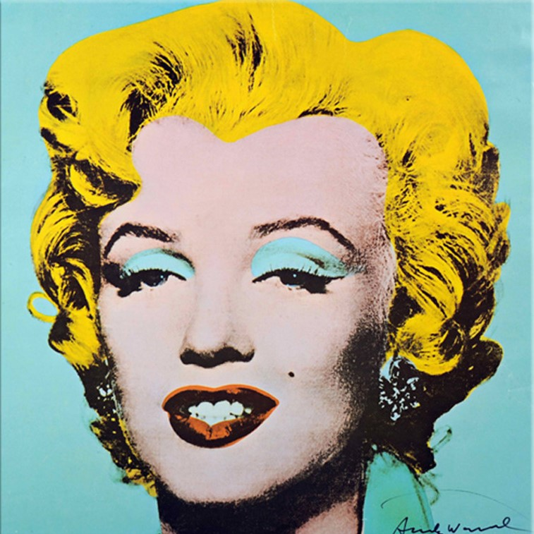

Home
Born: June 1, 1926 in Los Angeles, California, USA
Died: August 5, 1962 in Los Angeles, California, USA (drug overdose)
Birth Name: Norma Jeane Mortenson
Nicknames: The Blonde Bombshell
Height: 5' 5½" (1,66 m)
About
Marilyn Monroe was an American actress, comedienne, singer, and model. She became one of the world's most enduring iconic figures and is remembered both for her winsome embodiment of the Hollywood sex symbol and her tragic personal and professional struggles within the film industry.
Filmography
| Movie | Year |
|---|---|
| All About Eve | 1950 |
| How To Marry A Millionaire | 1953 |
| Gentlemen Prefer Blondes | 1953 |
| The Seven Year Itch | 1954 |
| Bus Stop | 1956 |
| Some Like It Hot | 1959 |
| The Misfits | 1961 |